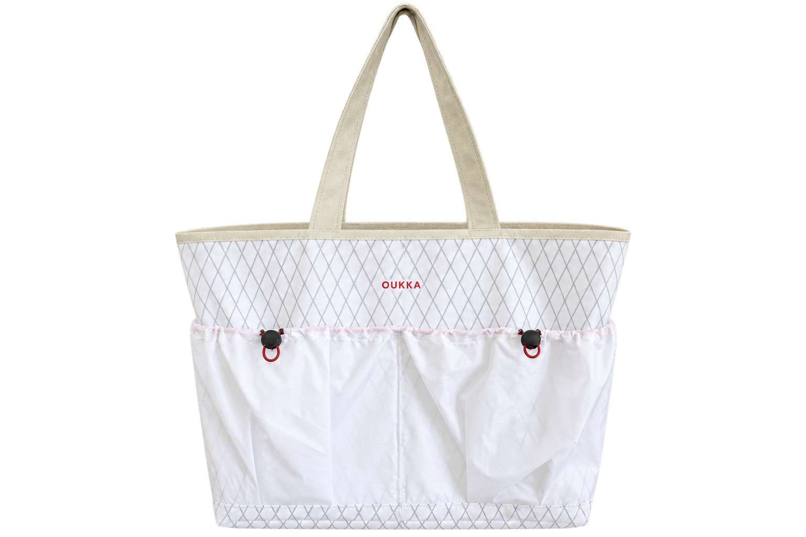
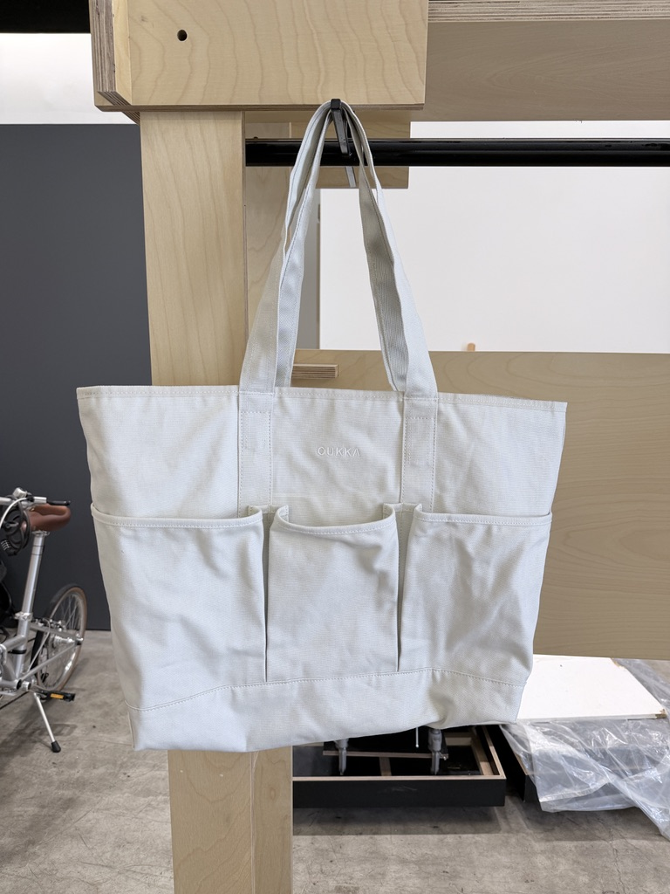
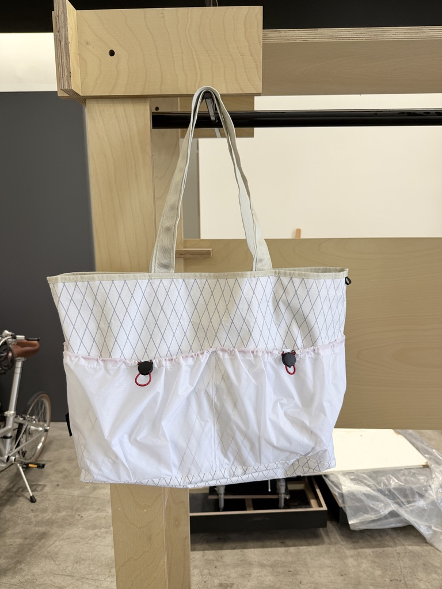

PHASE 0 / PRODUCT RECORD
THIS OBJECT
HAS A LIFE.
產品的故事，不在買下的那天結束。

OU4232THE OBJECT
OU4232
Reversible Utility Tote
帆布與機能面料在同一件物件中相遇。翻轉雙面，回應日常收納、移動與戶外生活的不同狀態。
DESIGN雙面托特結構
COLOURSWhite / Black
STATUSPhase 0 樣品
RECORD TYPE款式履歷示範
這是款式層級的概念紀錄，並非已驗證的單件序號或所有權證明。
THE DESIGN
Why two sides?
不是為了增加功能數量，而是讓同一件東西進入更多真正會發生的情境。


查看目前已確認的產品資訊
雙面設計、外置分區口袋、束口調節與長提帶可由目前樣品確認。尺寸、重量、材質成分、產地與性能等級尚待品牌正式資料，不作推測。
USE & CARE
Keep it in use.
正式保養指引會依量產材料與洗標確認後公布。在此之前，請以隨產品提供的洗標與品牌指引為準。
Phase 0 將持續整理使用中的觀察、結構修正與保養資訊。此頁目前尚未接入個人使用紀錄。
LIFETIME REPAIR
Repair is
part of the design.
修補的目的是恢复使用，讓值得留下的物件繼續被使用。
服務範圍、費用與送修流程尚待確認。此概念頁不等同免費終身保固承諾。